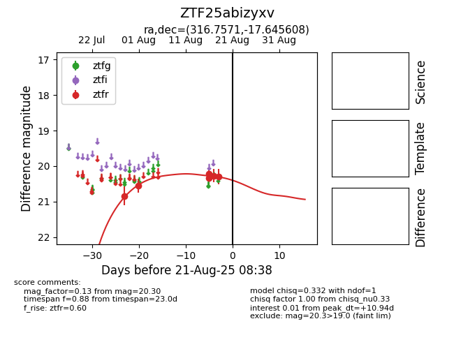

Target ZTF25abizyxv at 2025-08-21 08:38, see:
FINK: fink-portal.org/ZTF25abizyxv
Lasair: lasair-ztf.lsst.ac.uk/objects/ZTF25abizyxv
ALeRCE: alerce.online/object/ZTF25abizyxv
alt names
ZTF25abizyxv (ztf,alerce)
coordinates:
equatorial (ra, dec) = (316.7571,-17.64561)
galactic (l, b) = (30.9451,-37.67805)
photometry
last ztfr=20.30
6 ztfr detections
